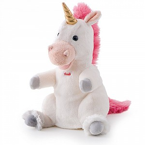

Мягкая игрушка на руку Единорог
, 25 см

Краткое описание товара
Мягкий гипоаллергенный единорог. Любит подвижные игры
Характеристика товара
- Возраст: от 3 лет
- Тип: мягкая игрушка
- Цвет: белый, розовый, золотой, серый
- Высота игрушки, см: 25
- Материал: пластик, синтепон, плюш
- Пол: для девочек, для мальчиков
- Упаковка: полиэтиленовый пакет
- Вид мягкой игрушки: единорог
| Характеристика | Описание |
| Страна производства | Россия |
| Уровень безопасности | Высший, подтвержден международными сертификатами |
| Оценка покупателей | 9 из 10 |
Подробное описание товара
Маленький улыбающийся единорог сможет выглядеть более реалистичным и одушевленным если использовать его как кукольную игрушку. Нужно просто надеть его на руку и дать волю фантазии, говоря за него другим голосом. Любой ребенок будет в восторге от такого типа игры. Единорожик выглядит ярко, как и подобает сказочному существу.